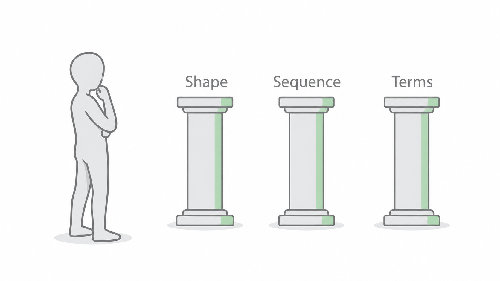
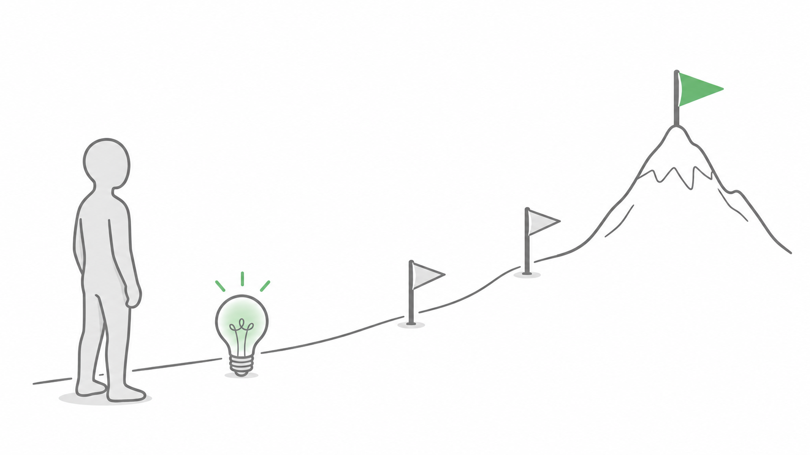

Cause
Homework done
Metronomics book, demo video, prep survey, Mural login.


Kick Off column
Cause
Metronomics book, demo video, prep survey, Mural login.
→
Action
Opens the first quarter in place of the first call.
→
Result
Core Purpose through QHAG and owned priorities in Metronome.

Human system · Kick Off
Cause
Owner, mission, and critical number for each function.
→
Action
How functions turn inputs into results and cash.
→
Result
Team View and flow feed 3HAG, scoreboard, and forecast.
Cultural system · Kick Off
Action
Why you exist, how you behave, and the long-term ambition the 3HAG steps toward.
Gap
Goals without purpose and values give the team nowhere honest to stand.


Execution system · Kick Off
Cause
Three-year step and key capabilities.
→
Action
Annual results, then quarterly priorities and monthly targets.
→
Result
Individual priorities and 3 key messages leave with names on them.
Meetings · set up at Kick Off
Action
Daily, weekly, and monthly meetings plus the recurring coach and CEO 1:1. Run through Metronome from Q2.
Gap
Without a booked pulse, priorities fade between planning days.
Meeting rhythm
Daily
15 minutes or less. Good News, metrics, the one thing, stuck.
Weekly
60 minutes or less. Round robin, feedback, then dynamic issues.
Monthly
Confirm the quarterly plan and the top 3 for the month.
Quarterly
Status, strategy check, then QHAG priorities with the coach.
What leaves the Kick Off
Human + Cultural
Org Function Chart, KFFM Level 1, Core Purpose, Values, BHAG.
Strategy + Execution
Key capabilities, 1HAG, QHAG, individual priorities, 3 key messages.
Rhythm
Daily and weekly booked. Coach and CEO 1:1 recurring.
Leave with the plan in Metronome and the meeting cadence set, so the two days compound instead of fading.